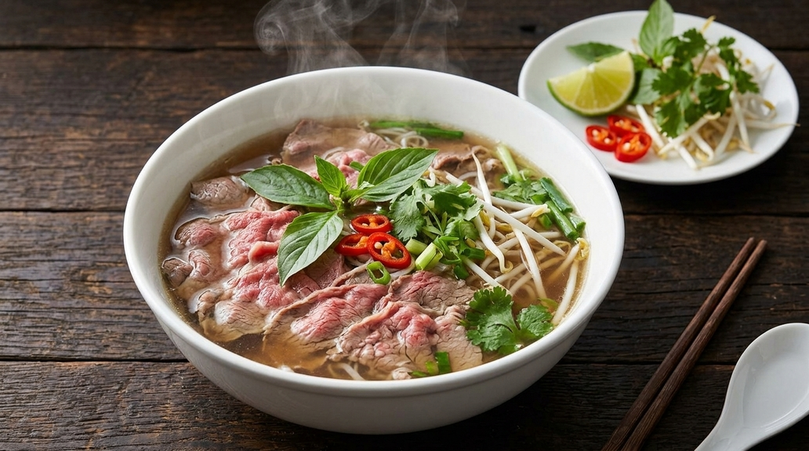

Pho

Čas priprave: 3 ure ·
Sestavine
- 1 kg govejih kosti
- 500 g govejega zrezka
- 2 l vode
- 1 čebula
- 50 g ingverja
- 2 zvezdasta janeža
- 1 palčka cimeta
- 3 žlice ribje omake
- 400 g riževih rezancev
- 100 g fižolovih kalčkov
- 1 limeta
- 1 šopek svežih zelišč (bazilika, koriander)
Postopek
- Kosti za 10 minut prekuhajte v vreli vodi, nato jih odcedite in sperite.
- Čebulo in ingver prepolovite ter ju na suhi ponvi opecite do rjave barve.
- Kosti, čebulo, ingver, janež in cimet dajte v lonec z 2 l vode.
- Kuhajte na majhnem ognju približno 2 uri in odstranjujte penico.
- Juho precedite in jo začinite z ribjo omako.
- Rezance skuhajte po navodilih na embalaži in jih razporedite v sklede.
- Zrezek narežite na zelo tanke rezine in ga položite na rezance.
- Prelijte z vrelo juho, dodajte kalčke, zelišča in limetin sok.